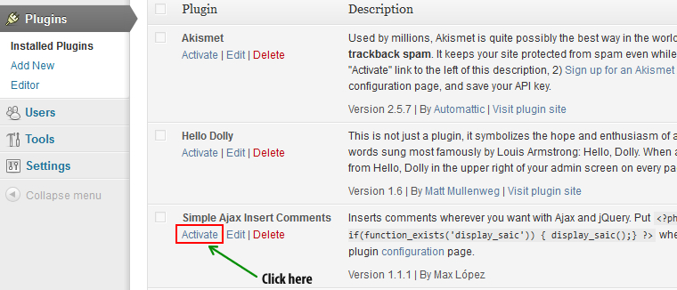
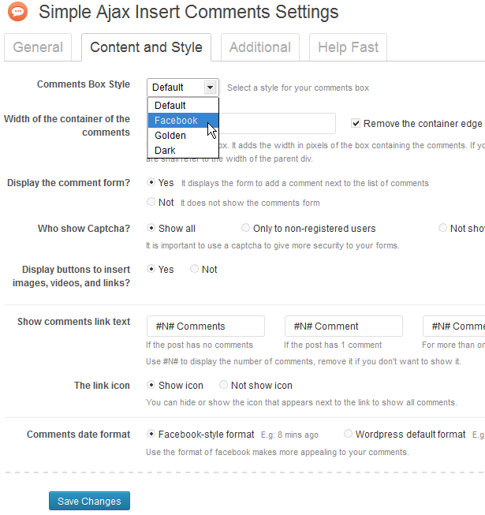
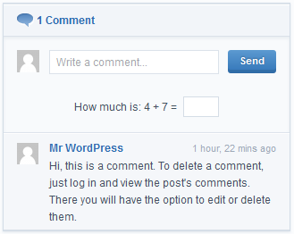
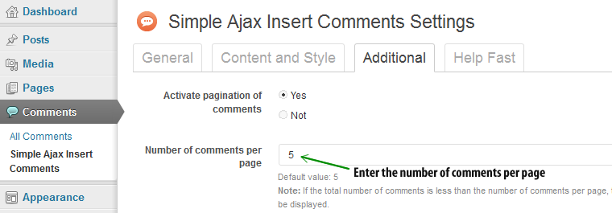
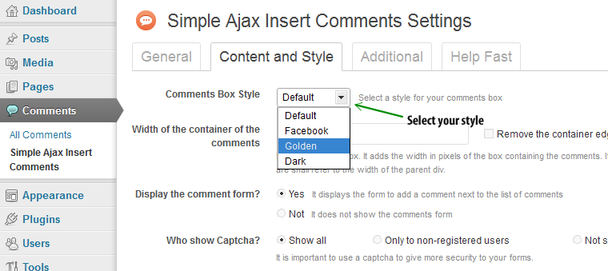

Thank you for your purchase of my article. If you have any questions that are beyond the scope of this help file, please do not hesitate to send a message to the e-mail address posted above. Thanks so much!
Simple Ajax Insert Comments is a small but powerful plugin for wordpress that allows you to insert and get feedback in a fast and easy way to style of social networks.
Simple Ajax Insert Comments uses Ajax, jQuery and PHP to insert comments for what you don't need to reload the page.
This Plugin has many options to customize it and leave it to your liking, also includes a captcha to prevent comment spam and have more security in the forms.
Hope you enjoy it!
1. Use the built-in WordPress plugin installer.
To use this method, first extract the .zip file downloaded from Code Canyon, then go to your WordPress Dashboard, click on Plugins, then click Add new. Next, click Upload and then click Choose File, navigate to where you downloaded and extracted the file from Code Canyon, and select simple-ajax-insert-comments.zip. Now click "Install Now".
2. Use FTP to upload the plugin
To use this method, first extract the .zip file downloaded from Code Canyon, then open your FTP application, navigate to where you extracted the file, and upload the "simple-ajax-insert-comments" folder to your wp-content/plugins directory. The plugin is now installed.
Now that the plugin is installed, go to your WordPress Dashboard, click on Plugins, find Simple Ajax Insert Comments and click "Activate".
You can now go to the plugin settings page to customize it to your liking in the drop-down menu of the comments.
The plugin configuration page is located in the drop-down menu of the comments
Using this panel, you can customize all the options of the plugin, in every field there is a description to guide you and know that he performs such an option.

After you have installed and activated "Simple Ajax Insert Comments" you will notice that at the end of your post content appears similar to the following image link:
Then to display the list of comments, you have to do is click on that link, in this way will display the list of comments that you belong to that post and a form to submit comments. See image:
Now you can already send comments!
In the plugin configuration page, you have an option to do so, by entering a number in the text box. See image
In the plugin configuration panel you can switch between 4 different styles, you only have to choose it in the drop-down list for this option: view image
..............................
....................
...........
This plugin is super easy, you can use the description of each option to know that is what it does!
Thank you for your purchase of my article. If you have any questions that are beyond the scope of this help file, please do not hesitate to send a message to the e-mail address posted above. Thanks so much!